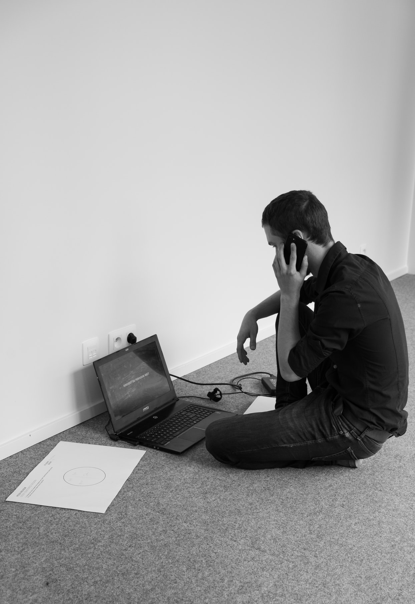

ABOUT ME & PAGE
全てのページ内容は架空であり、ポートフォリオのために作られたものです。
参考サイト: mikeinghamdesign
- 
-
I'm a coffee drinking designer & front-end developer based in Derby, UK, designing user-friendly interfaces with simplicity and beauty in mind for clients in the UK and around the world.
On the digital side, using HTML5 and CSS3 I can create anything from a small static site, to a custom theme built for Wordpress. All projects are produced with SEO in mind making sure you have a great foundation to build on when it comes to being found in Google. I build sites that do not just look good on your desktop PC, but are also fully responsive so it looks and works great on all tablet devices and phones too.
If you need more than just a website then I can also help with branding and any print needs you may have. From business cards and stationery through to brochures and signs, I can help. With many years of experience in print design I can give your brand a refresh or produce your latest company brochure.
Whatever your needs and goals do get in touch and I can advise how I can help you take this forward. If you would like to discuss your project or would just like to say hello then do get in touch and drop me a message.
HOW I CAN HELP
- WEB DESIGN
- From simple wireframes through to creating a modern fresh website design reflecting your brand, I can help.
- WEB DEVELOPMENT
- From a small static site to a new blog theme or WordPress site, I can bring your site design to life! All sites are responsive and built with SEO in mind.
- GRAPHIC DESIGN
- Branding, business cards and matching stationery, everything you need and more to go with your brand new website.